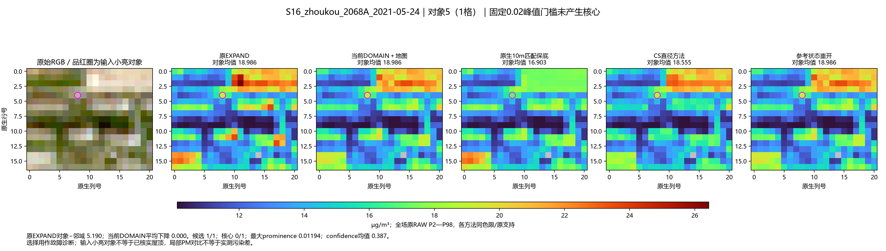
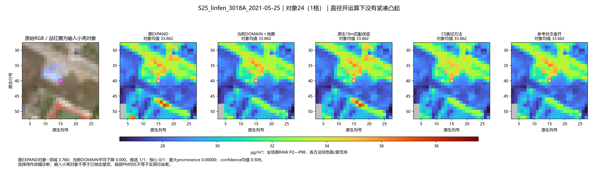
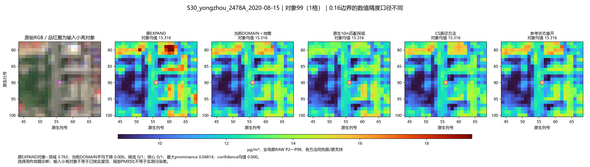
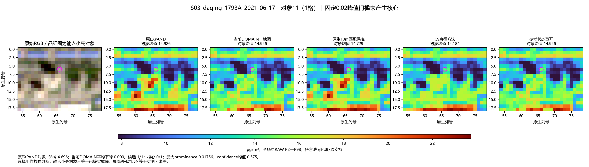
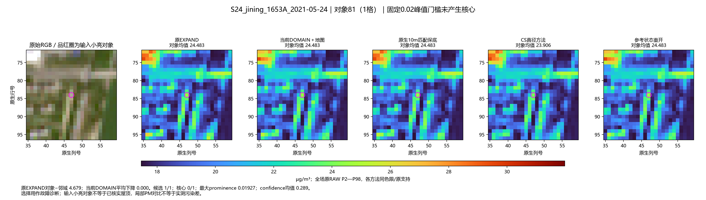
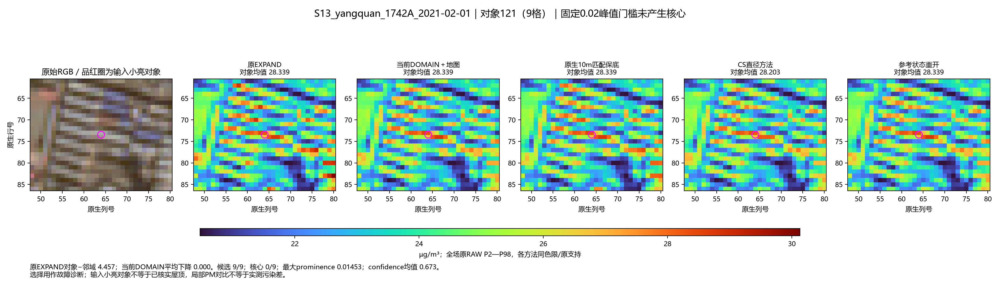

30个残留小亮对象：沿真实输入和中间量定位
120季节场按预定规则筛查，原EXPAND局部高差≥2、当前DOMAIN新增下降≤0.1；排除触边/邻缺测与缺可靠对象级参考。每站最多2个。此为输出驱动的故障优先队列，不是独立精度验证。
固定选择规则 · 30对象逐环节结果 · 像元公式拆解
优先级1 · 周口 · 固定0.02峰值门槛未产生核心

优先级20 · 临汾 · 直径开运算下没有紧凑凸起

优先级23 · 永州 · 0.16边界的数值精度口径不同

优先级2 · 大庆 · 固定0.02峰值门槛未产生核心

优先级3 · 济宁 · 固定0.02峰值门槛未产生核心

优先级5 · 阳泉 · 固定0.02峰值门槛未产生核心
